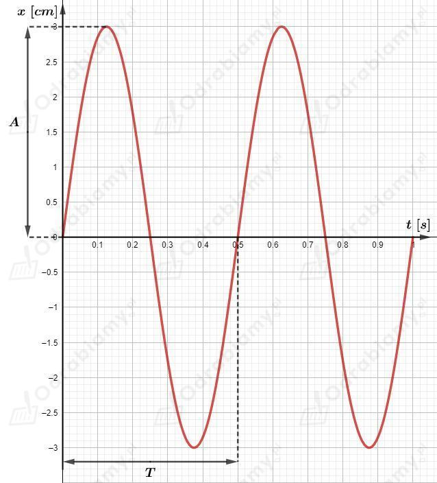
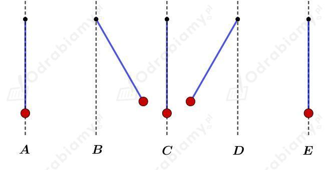

Czas między kolejnymi maksymalnymi wychyleniami do przodu jest równy okresowi drgań jakie wykonuje huśtające się dziecko.
Częstotliwość drgań to odwrotność okresu :
Amplituda to maksymalne wychylenie ciała z położenia równowagi (odczytujemy ją z osi ):
Okres drgań to czas między kolejnymi takimi samymi położeniami ciała (odczytujemy go z osi ):
Częstotliwość drgań wyznaczymy jako odwrotność okresu :
Amplituda jest równa:
Okres wynosi:
Szkicujemy wykres przedstawiający sinusoidę o zadanych parametrach - amplituda i okres:

Okres drgań wahadła jest równy:
Rysunek pomocniczy do zadania:

Powyższy rysunek przedstawia kolejne położenia wahadła podczas trwania jednego okresu.
A - wahadło przechodzi przez położenie równowagi (w prawo)
B - maksymalne wychylenie wahadła (w prawo)
C - wahadło przechodzi przez położenie równowagi (w lewo)
D - maksymalne wychylenie wahadła (w lewo)
E - wahadło przechodzi przez położenie równowagi (w prawo)
Odcinek czasowy między punktami A i E jest równy okresowi drgań wahadła, zatem odcinek czasowy pomiędzy sąsiednimi punktami (A i B, B i C, C i D oraz D i E) jest równy:
a)
Po czasie 0,2 s wahadło znajdzie się w położeniu B - maksymalne wychylenie w prawą stronę.
b)
Po czasie 0,4 s wahadło znajdzie się w położeniu C - wahadło przechodzi przez położenie równowagi i porusza się w lewą stronę.
c)
Po czasie 0,8 s wahadło znajdzie się w położeniu E - wahadło przechodzi przez położenie równowagi w prawą stronę.